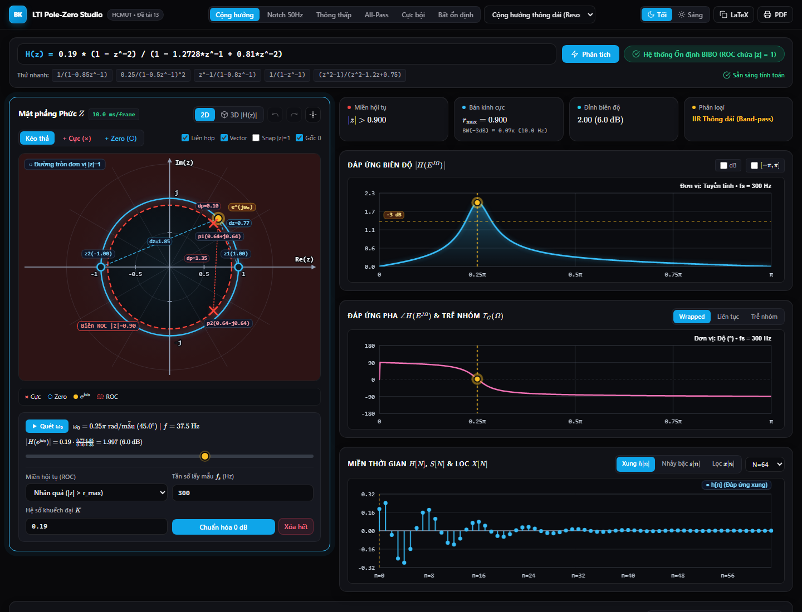
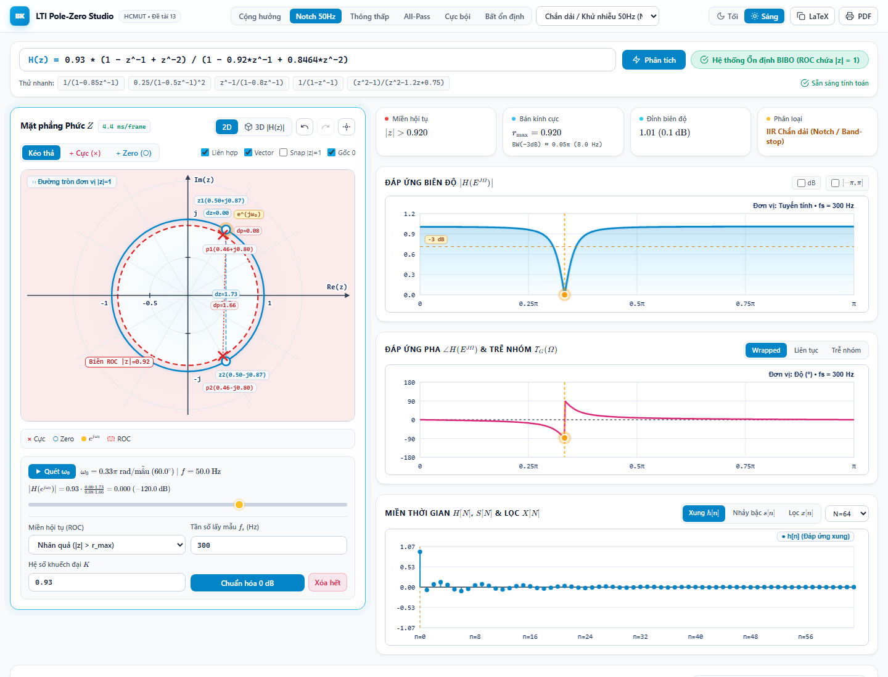
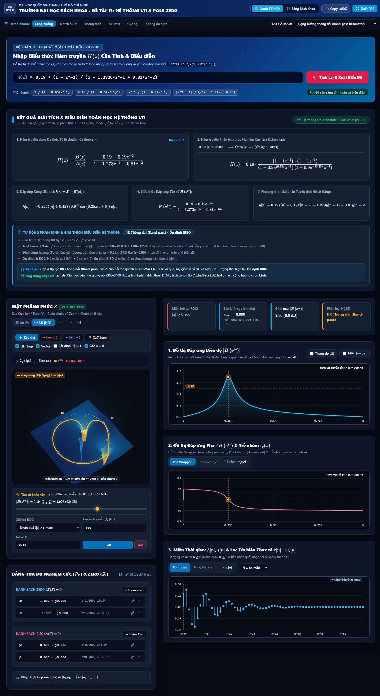
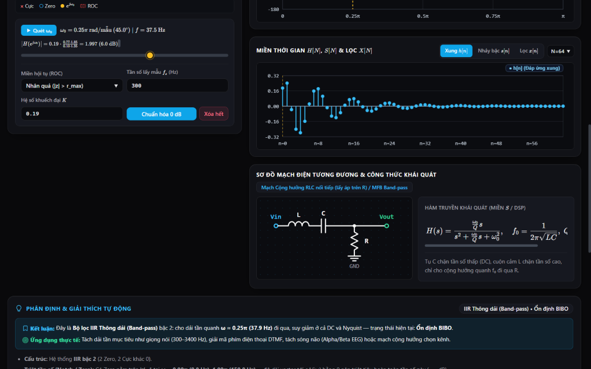

| Giảng viên hướng dẫn: | ................................................................ |
| Lớp / Nhóm học phần: | ................................................................ |
| Nhóm thực hiện: |
1. [Họ và tên thành viên 1] — MSSV: ............ 2. [Họ và tên thành viên 2] — MSSV: ............ 3. [Họ và tên thành viên 3] — MSSV: ............ 4. [Họ và tên thành viên 4] — MSSV: ............ |
| Link Web App (Live): | https://anhletuan2408-glitch.github.io/xulysotinhieu/ |
Trong chương trình đào tạo kỹ sư tại Trường Đại học Bách Khoa – ĐHQG TP.HCM, môn học Xử lý Số Tín hiệu (Digital Signal Processing – DSP) giữ vai trò nền tảng cho nhiều lĩnh vực trọng yếu như viễn thông, xử lý âm thanh – hình ảnh, đo lường điều khiển, kỹ thuật y sinh và trí tuệ nhân tạo biên. Một trong những trụ cột lý thuyết quan trọng nhất nhưng cũng dễ gây trừu tượng cho sinh viên khi tiếp cận lần đầu chính là mối liên hệ hình học giữa vị trí Cực (Poles) và Không điểm (Zeros) trên mặt phẳng phức $Z$ với Miền hội tụ (ROC), tính ổn định BIBO, đáp ứng xung $h[n]$ và đáp ứng tần số $H(e^{j\omega})$ của hệ thống tuyến tính bất biến theo thời gian (LTI).
Xuất phát từ nhu cầu trực quan hóa kiến thức lý thuyết thành trải nghiệm tương tác tức thì ngay trên trình duyệt, nhóm chúng em đã thực hiện Đề tài 13: "Xây dựng Web App Tương tác Phân tích Biểu đồ Pole-Zero và Đáp ứng Tần số Hệ LTI". Sản phẩm LTI Pole-Zero Studio được thiết kế thuần JavaScript/HTML5 Canvas theo triết lý Precision Studio, vận hành hoàn toàn độc lập (100% offline không cần backend hay cài đặt môi trường), cho phép sinh viên vừa nhập trực tiếp biểu thức đại số $H(z)$ bất kỳ, vừa kéo thả trực tiếp Cực/Zero ở tốc độ 60 FPS để quan sát đồng thời mặt phẳng 2D, bề mặt 3D $|H(z)|$, đồ thị Biên độ/Pha/Trễ nhóm, đáp ứng miền thời gian và sơ đồ mạch điện tương đương miền $s$.
Nhóm xin gửi lời cảm ơn chân thành đến quý Thầy/Cô giảng dạy bộ môn Xử lý Số Tín hiệu đã truyền đạt nền tảng kiến thức toán học vững chắc, định hướng yêu cầu kỹ thuật sát với thực tế và tạo điều kiện để nhóm hoàn thành đồ án này. Dù đã cố gắng kiểm chứng chặt chẽ cả về giải thuật lẫn giao diện người dùng, báo cáo và phần mềm chắc chắn vẫn còn những điểm có thể tiếp tục hoàn thiện. Nhóm rất mong nhận được những ý kiến đóng góp quý báu từ quý Thầy/Cô.
TP. Hồ Chí Minh, ngày ...... tháng 11 năm 2026
Đại diện nhóm thực hiện
Nhóm thực hiện Đề tài 13 cam kết bảng phân công nhiệm vụ và tỷ lệ phần trăm (%) đóng góp dưới đây phản ánh trung thực mức độ tham gia thực tế của từng thành viên trong suốt quá trình nghiên cứu lý thuyết, xây dựng giải thuật DSP, thiết kế giao diện, kiểm thử phần mềm và biên soạn báo cáo. Các thành viên cùng thống nhất và ký tên xác nhận (Tổng tỷ lệ đóng góp bằng đúng 100%).
| STT | Họ và Tên | MSSV | Nhiệm vụ đảm nhận chi tiết | Đóng góp (%) | Ký tên xác nhận |
|---|---|---|---|---|---|
| 1 | [Họ và tên TV 1] | [MSSV 1] |
Phát triển lõi toán học DSP (js/dsp.js): bộ phân tích đại số hữu tỷ Laurent $H(z)$, giải nghiệm Aberth-Ehrlich, PFE cực đơn & cực bội tìm $h[n]$, trễ nhóm giải tích.
|
25% | |
| 2 | [Họ và tên TV 2] | [MSSV 2] |
Xây dựng hệ thống đồ họa 60 FPS (js/charts.js): Mặt phẳng 2D $Z$ chống chồng nhãn, bề mặt 3D $|H(z)|$, đồ thị Biên độ/Pha/Trễ nhóm và Miền thời gian.
|
25% | |
| 3 | [Họ và tên TV 3] | [MSSV 3] |
Thiết kế giao diện Precision Studio (index.html, css/styles.css), bộ điều khiển tương tác & 12 sơ đồ mạch điện SVG (js/app.js), tối ưu Dark/Light Mode & Offline.
|
25% | |
| 4 | [Họ và tên TV 4] | [MSSV 4] | Xây dựng bộ kiểm thử 15 kịch bản DSP, kiểm thử trình duyệt (Desktop/Mobile), biên soạn Báo cáo Đồ án, Tài liệu hướng dẫn học tập và đóng gói bản phát hành. | 25% | |
| Tổng tỷ lệ đóng góp của cả nhóm: | 100% | ||||
* Ghi chú: Nhóm có thể điều chỉnh số lượng dòng thành viên và tỷ lệ % thực tế trước khi in/ký, đảm bảo tổng cột Đóng góp luôn bằng chính xác 100%.
Trong phân tích và thiết kế hệ thống tuyến tính bất biến theo thời gian rời rạc (Discrete-Time LTI Systems), hàm truyền miền $Z$ ký hiệu $H(z)$ đóng vai trò cầu nối trung tâm giữa mô tả miền thời gian (phương trình sai phân và đáp ứng xung $h[n]$) với mô tả miền tần số (đáp ứng biên độ $|H(e^{j\omega})|$, đáp ứng pha $\angle H(e^{j\omega})$ và trễ nhóm $\tau_g(\omega)$). Tuy nhiên, khi sinh viên giải bài tập trên giấy hoặc chạy các đoạn lệnh tĩnh trên MATLAB/Python, việc thay đổi một tham số vị trí cực $p_k = r e^{j\theta}$ hay không điểm $z_i$ đòi hỏi phải tính lại đa thức, vẽ lại biểu đồ và đối chiếu thủ công nhiều đồ thị tách rời.
Điều này tạo ra khoảng cách nhận thức lớn: người học thường ghi nhớ máy móc quy tắc "cực trong đường tròn đơn vị thì ổn định" mà chưa cảm nhận trực giác tại sao khi kéo một cặp cực tiến sát đường tròn đơn vị ($r \to 1$) thì đỉnh cộng hưởng nhọn vọt lên, độ rộng băng thông $-3\text{ dB}$ co hẹp theo quy luật $\Delta\omega_{-3\text{dB}} \approx 2(1-r)$, đồng thời đáp ứng xung $h[n]$ tắt dần chậm đi; hay tại sao cùng một hàm truyền $H(z)$ nhưng chỉ cần thay đổi Miền hội tụ (ROC) thì hệ thống có thể chuyển từ bất ổn định nhân quả sang ổn định phản nhân quả.
Nhằm giải quyết triệt để bài toán trực quan hóa nêu trên, nhóm đã xây dựng ứng dụng web tương tác LTI Pole-Zero Studio đáp ứng đầy đủ và mở rộng vượt mức toàn bộ yêu cầu kỹ thuật của Đề tài 13, được tổng hợp tại Bảng 1.1.
| Hạng mục yêu cầu | Yêu cầu gốc của Đề tài 13 | Giải pháp triển khai trong LTI Pole-Zero Studio |
|---|---|---|
| Nhập hàm truyền $H(z)$ | Nhập hàm truyền $H(z)$ hoặc kéo thả Pole/Zero trên mặt phẳng phức. | Hỗ trợ đồng thời 4 cách nhập: (1) Biểu thức đại số tự do theo $z, z^{-1}$, phân thức lồng nhau, lũy thừa; (2) Kéo thả 60 FPS có bắt dính $|z|=1$, Zoom, Undo/Redo; (3) Sửa trực tiếp bảng tọa độ $(Re, Im)$ hoặc $(r, \angle^\circ)$; (4) Nhập mảng hệ số $[b_m], [a_k]$. |
| Đường tròn đơn vị & ROC | Tự động vẽ đường tròn đơn vị và xác định Miền hội tụ (ROC). | Vẽ đường tròn đơn vị $|z|=1$, tô bóng và đánh dấu biên ROC màu đỏ đặc trưng cho cả 3 chế độ (Nhân quả, Phản nhân quả, Hai phía chứa $|z|=1$), hiển thị cực/zero ẩn tại gốc $z=0$ và đánh giá ổn định BIBO tức thì. |
| Đáp ứng xung $h[n]$ | Tính và vẽ đáp ứng xung $h[n]$. | Xuất công thức giải tích đóng LaTeX $h[n] = \mathcal{Z}^{-1}\{H(z)\}$ hỗ trợ cả cực đơn lẫn cực bội, đồng thời vẽ đồ thị rời rạc $h[n]$, nhảy bậc $s[n]$ và mô phỏng lọc tín hiệu thực tế $x[n] \to y[n]$ (2 sin, sin+nhiễu, sóng vuông, chirp). |
| Đồ thị Biên độ & Pha | Vẽ đồ thị Biên độ $|H(e^{j\omega})|$ và Pha $\angle H(e^{j\omega})$. | Vẽ Biên độ (Tuyến tính/dB, vạch $-3\text{ dB}$, chống bẹp đỉnh khi cực trên $|z|=1$), Pha Wrapped (ngắt nhảy sạch), Pha Liên tục (Unwrapped), Trễ nhóm giải tích $\tau_g(\omega)$, quy đổi tần số thực $f$ (Hz) theo $f_s$, và Mặt cong 3D $|H(z)|$ xoay tự do. |
| Tính năng mở rộng học thuật | Trực quan hóa phục vụ học tập & demo trực tiếp trên trình duyệt. | Tự động phân định loại bộ lọc, kết luận & gợi ý ứng dụng thực tế; hiển thị 12 sơ đồ mạch điện SVG tương đương (RC, CR, RLC, Twin-T Notch, Lattice All-Pass, FIR Delay Line...) kèm công thức khái quát miền $s$; nút Quét tự động $\omega_0$; chạy 100% Offline không cần mạng. |
Khác với các ứng dụng Python Streamlit yêu cầu khởi chạy máy chủ cục bộ hoặc phụ thuộc kết nối internet để tải thư viện CDN, LTI Pole-Zero Studio được kiến trúc hoàn toàn phía trình duyệt (Client-side Pure JS + HTML5 Canvas) và đóng gói sẵn toàn bộ thư viện giao diện (Tailwind CSS), thư viện công thức toán học (KaTeX + 20 phông chữ .woff2) và biểu trưng chính thức Trường Đại học Bách Khoa TP.HCM. Nhờ đó, giảng viên và sinh viên chỉ cần mở trực tiếp tệp index.html hoặc tệp đơn độc lập LTI_Pole_Zero_SingleFile.html là có thể trình chiếu, giảng dạy và tự thực hành trên mọi hệ điều hành (Windows, macOS, Linux, máy tính bảng) ngay cả trong phòng học không có kết nối Wi-Fi.
Một hệ thống xử lý tín hiệu số tuyến tính bất biến theo thời gian (LTI) nhân quả, hữu hạn bậc được đặc trưng bởi phương trình sai phân tuyến tính hệ số hằng (Linear Constant-Coefficient Difference Equation – LCCDE) bậc $N$:
Trong đó $x[n]$ là tín hiệu đầu vào rời rạc, $y[n]$ là tín hiệu đầu ra, các hệ số thực $\{b_m\}_{m=0}^M$ quyết định nhánh truyền thẳng (feedforward) và $\{a_k\}_{k=1}^N$ quyết định nhánh hồi tiếp (feedback). Khi mọi hệ số $a_k = 0$ với $k \ge 1$, hệ thống không có vòng hồi tiếp và trở thành bộ lọc FIR (Finite Impulse Response) với đáp ứng xung hữu hạn $h[n] = \frac{b_n}{a_0}$. Ngược lại, khi tồn tại ít nhất một $a_k \neq 0$ ($k \ge 1$), hệ thống thuộc lớp IIR (Infinite Impulse Response) có đáp ứng xung kéo dài vô hạn.
Biến đổi $Z$ hai phía của một dãy rời rạc $h[n]$ được định nghĩa trên mặt phẳng phức $z = r e^{j\omega} \in \mathbb{C}$ như sau:
Áp dụng biến đổi $Z$ cho hai vế phương trình sai phân với điều kiện ban đầu bằng không, ta thu được hàm truyền hữu tỷ của hệ thống LTI theo lũy thừa âm của $z^{-1}$ và dạng phân tích nhân tử theo nghiệm Cực – Zero:
Biến đổi $Z$ chỉ xác định duy nhất đáp ứng xung $h[n]$ khi đi kèm Miền hội tụ (Region of Convergence – ROC) — tập hợp các giá trị $z \in \mathbb{C}$ làm chuỗi lũy thừa hội tụ tuyệt đối:
Về mặt hình học, ROC của hệ LTI hữu tỷ luôn là hình tròn, hình vành khăn hoặc phần ngoài hình tròn đồng tâm tại gốc tọa độ và không bao giờ chứa bất kỳ cực nào. Gọi $r_{\max} = \max_k |p_k|$ và $r_{\min} = \min_k |p_k|$ (với $p_k \neq 0$). Tiêu chuẩn ổn định BIBO (Bounded-Input Bounded-Output) đòi hỏi $\sum_{n=-\infty}^{\infty} |h[n]| < \infty$, tương đương trực tiếp với điều kiện: ROC phải chứa đường tròn đơn vị $|z| = 1$. Bảng 2.1 tổng hợp 3 cấu hình ROC cơ bản được hỗ trợ trực tiếp trong công cụ.
| Loại hệ thống | Miền xác định $h[n]$ | Biểu thức ROC | Điều kiện ổn định BIBO |
|---|---|---|---|
| Hệ Nhân quả (Causal) | Phía phải: $h[n] = 0, \; \forall n < 0$ | $|z| > r_{\max}$ | $r_{\max} < 1$ (mọi cực nằm bên trong đường tròn đơn vị). |
| Hệ Phản nhân quả (Anti-Causal) | Phía trái: $h[n] = 0, \; \forall n \ge 0$ | $|z| < r_{\min}$ | $r_{\min} > 1$ (mọi cực nằm bên ngoài đường tròn đơn vị). |
| Hệ Hai phía (Two-Sided) | Cả $n < 0$ và $n \ge 0$ | $r_{\text{in}} < |z| < r_{\text{out}}$ | $r_{\text{in}} < 1 < r_{\text{out}}$ (không có cực nằm trên $|z| = 1$). |
| Hệ FIR thuần túy | Hữu hạn mẫu $0 \le n \le M$ | $|z| > 0$ (toàn mặt phẳng trừ $0$) | Luôn ổn định BIBO do không có cực ngoài gốc tọa độ. |
Khi hệ thống ổn định BIBO (đường tròn đơn vị $|z|=1$ thuộc ROC), biến đổi Fourier thời gian rời rạc (DTFT) tồn tại và thu được bằng cách thay $z = e^{j\omega}$ với $\omega \in [-\pi, \pi]$ (rad/mẫu). Mối liên hệ giữa tần số góc chuẩn hóa $\omega$ và tần số vật lý $f$ (Hz) tại tốc độ lấy mẫu $f_s$ (Hz) là $\omega = 2\pi f / f_s$, trong đó $\omega = \pi$ ứng với tần số Nyquist $f_s / 2$.
Biểu thức trên mang ý nghĩa hình học cực kỳ sâu sắc: độ lớn $|e^{j\omega} - z_i| = d_{z,i}$ chính là chiều dài vector nối từ Zero $z_i$ tới điểm khảo sát $e^{j\omega}$ trên đường tròn đơn vị, còn $|e^{j\omega} - p_k| = d_{p,k}$ là chiều dài vector nối từ Cực $p_k$ tới $e^{j\omega}$.
Mở rộng sang không gian ba chiều, nếu xem mặt phẳng phức $Z$ là mặt đáy nằm ngang và giá trị $|H(z)|$ là độ cao thẳng đứng, ta thu được bề mặt 3D $|H(z)|$ giống như một tấm màng đàn hồi: mỗi Cực đẩy mặt cong vút lên vô cực tạo đỉnh núi, còn mỗi Zero ghim mặt cong chạm sát đáy bằng $0$. Giao tuyến khi cắt thẳng đứng bề mặt 3D dọc theo trụ đơn vị $|z| = 1$ (đường màu vàng trong ứng dụng) rồi trải phẳng theo góc $\omega$ chính là đồ thị Đáp ứng Biên độ $|H(e^{j\omega})|$. Đối với hệ thống All-Pass có cặp cực $p_k = r e^{j\theta}$ và zero nghịch đảo liên hợp $z_k = r^{-1}e^{j\theta}$, tỷ lệ khoảng cách tại mọi điểm trên $|z|=1$ luôn bằng hằng số $|e^{j\omega} - r^{-1}e^{j\theta}| / |e^{j\omega} - r e^{j\theta}| = r^{-1}$, nên đường cắt $|z|=1$ phẳng tuyệt đối $0\text{ dB}$ toàn dải.
Bên cạnh biên độ, đặc tính pha quyết định mức độ méo dạng sóng theo thời gian. Trễ nhóm (Group Delay) đo độ trễ truyền dẫn tính theo số mẫu của đường bao (envelope) tại mỗi thành phần tần số $\omega$, được định nghĩa là âm đạo hàm của pha liên tục:
Trong đó $B'(e^{-j\omega}) = \sum_{m=1}^{M} m b_m e^{-jm\omega}$ và $A'(e^{-j\omega}) = \sum_{k=1}^{N} k a_k e^{-jk\omega}$. Cách tính giải tích này hoàn toàn miễn nhiễm với sai số sai phân số khi gặp bước nhảy pha $\pm\pi$ tại các Zero nằm trên đường tròn đơn vị. Một hệ thống LTI nhân quả, ổn định được gọi là Pha cực tiểu (Minimum-Phase) khi cả toàn bộ cực và toàn bộ zero hữu hạn đều nằm nghiêm ngặt bên trong đường tròn đơn vị ($|p_k| < 1$ và $|z_i| < 1$), đảm bảo trễ nhóm nhỏ nhất và hệ thống nghịch đảo $H^{-1}(z)$ cũng nhân quả, ổn định.
Trong kỹ thuật điện tử – viễn thông, các bộ lọc số IIR thường được thiết kế xuất phát từ các nguyên mẫu mạch lọc tương tự ($R, L, C$, Op-Amp) thông qua phép biến đổi song tuyến (Bilinear Transform) ánh xạ nửa trái mặt phẳng $s$ vào bên trong đường tròn đơn vị mặt phẳng $z$:
Phép ánh xạ bảo toàn tính ổn định ($\operatorname{Re}(s_k) < 0 \iff |p_k| < 1$), ánh xạ trục ảo $j\Omega$ lên đường tròn đơn vị $|z|=1$ và cho phép liên hệ trực tiếp từng lớp bộ lọc số với mạch điện vật lý tương ứng (Bảng 2.2).
| Phân loại hệ thống LTI | Mạch điện tương đương (Analog / DSP) | Công thức hàm truyền khái quát |
|---|---|---|
| Thông thấp bậc 1 | Mạch RC nối tiếp (ngõ ra trên tụ $C$) | $H(s) = \frac{1}{1+sRC}, \; f_c = \frac{1}{2\pi RC}$ |
| Thông thấp bậc $\ge 2$ | Mạch RLC (lấy áp trên $C$) / Sallen-Key Low-pass | $H(s) = \frac{\omega_0^2}{s^2 + \frac{\omega_0}{Q}s + \omega_0^2}, \; f_0 = \frac{1}{2\pi\sqrt{LC}}$ |
| Thông cao bậc 1 / $\ge 2$ | Mạch CR (lấy áp trên $R$) / RLC (lấy áp trên $L$) | $H(s) = \frac{sRC}{1+sRC}$ hoặc $\frac{s^2}{s^2 + \frac{\omega_0}{Q}s + \omega_0^2}$ |
| Thông dải / Cộng hưởng | Mạch cộng hưởng RLC nối tiếp (lấy áp trên $R$) | $H(s) = \frac{\frac{\omega_0}{Q}s}{s^2 + \frac{\omega_0}{Q}s + \omega_0^2}, \; Q = \frac{1}{R}\sqrt{\frac{L}{C}}$ |
| Chắn dải / Notch 50Hz | Mạch cầu Twin-T Notch (RC) / Bẫy LC song song | $H(s) = \frac{s^2 + \omega_N^2}{s^2 + \frac{\omega_N}{Q}s + \omega_N^2}, \; f_N = \frac{1}{2\pi RC}$ |
| All-Pass (Cân bằng pha) | Mạch cầu Lattice / Op-Amp dịch pha chủ động | $H(s) = \frac{s^2 - \frac{\omega_0}{Q}s + \omega_0^2}{s^2 + \frac{\omega_0}{Q}s + \omega_0^2}, \; |H(j\omega)|=1$ |
| FIR / Răng lược (Comb) | Mạch dây trễ FIR (Tapped Delay Line $z^{-1}$) | $H(z) = \sum_{m=0}^{M} b_m z^{-m}$ (không có hồi tiếp) |
| Biên giới ổn định ($|p|=1$) | Mạch tích phân Op-Amp ($p=1$) hoặc LC lý tưởng ($R=0$) | $H(s) = \frac{1}{sRC}$ hoặc $H(s) = \frac{\omega_0}{s^2 + \omega_0^2}$ |
Hệ thống được tổ chức theo mô hình 3 tầng tách biệt rõ trách nhiệm (Separation of Concerns) hoàn toàn bằng JavaScript thuần ES6+, HTML5 Canvas và CSS Variables, không phụ thuộc bất kỳ máy chủ backend hay kết nối mạng ngoài nào:
js/dsp.js): Quản lý lớp số phức Complex, bộ phân tích đại số hữu tỷ LaurentPoly/RatFunc, bộ giải nghiệm findPolynomialRoots(), bộ khai triển PFE cực đơn/cực bội buildAnalyticalHnLatex(), bộ tính phổ/trễ nhóm giải tích evaluateFrequencyResponse(), bộ giải miền thời gian computeTimeDomainResponse() và bộ phân định + ánh xạ mạch điện buildSystemExplanation().js/charts.js): Quản lý hệ token màu Sáng/Tối getChartTheme(), bộ vẽ mặt phẳng 2D $Z$ với thuật toán tránh chồng nhãn placeNonOverlappingBadge(), bộ chiếu bề mặt 3D $|H(z)|$ (draw3DZSurfaceCanvas()), đồ thị Biên độ/Pha/Trễ nhóm và đồ thị Miền thời gian.js/app.js, index.html, css/styles.css): Đồng bộ hai chiều giữa ô nhập $H(z)$, bảng tọa độ nghiệm chỉnh sửa trực tiếp, thanh trượt & nút Quét tự động $\omega_0$, Pointer Events (chuột + cảm ứng), Zoom, Snap $|z|=1$, Undo/Redo (Ctrl+Z/Ctrl+Y) và 12 sơ đồ mạch SVG (CIRCUIT_SVGS).vendor/, assets/): Đóng gói sẵn vendor/tailwind.min.js, vendor/katex/ kèm toàn bộ 20 tệp font .woff2 và logo assets/bk-logo.png. Ngoài ra, bản LTI_Pole_Zero_SingleFile.html nhúng mã hóa Base64 toàn bộ font và logo vào duy nhất 1 tệp HTML để chạy offline tuyệt đối.| Tệp / Thư mục | Vai trò | Mô tả chức năng chính |
|---|---|---|
index.html |
Giao diện chính | Bố cục Precision Studio (Above-the-fold Z-Plane + 4 Panel đồ thị & mạch điện + Bento công thức LaTeX). |
css/styles.css |
Design System | Hệ biến CSS Dual-Theme (Obsidian Dark & Sáng Bách Khoa), nền lưới Blueprint, @media print. |
js/dsp.js |
Lõi Toán học DSP | Laurent Parser, Aberth-Ehrlich, PFE cực đơn/cực bội, Trễ nhóm giải tích, Phân định & Mạch điện. |
js/charts.js |
Đồ họa Canvas | HiDPI 2D Z-Plane, 3D $|H(z)|$ Painter's Algorithm, Biên độ ($-3\text{ dB}$), Pha Wrapped/Unwrapped, $h[n]/s[n]/y[n]$. |
js/app.js |
Điều phối & UX | Pointer/Touch, Auto-Sweep $\omega_0$, Undo/Redo, Sửa tọa độ nội tuyến, 12 sơ đồ SVG CIRCUIT_SVGS. |
vendor/ & assets/ |
Tài nguyên Offline | Tailwind CSS, KaTeX JS/CSS + 20 font .woff2, logo bk-logo.png đã căn tỷ lệ 1:1. |
LTI_Pole_Zero_SingleFile.html |
Bản đơn độc lập | Đóng gói 100% mã nguồn, font Base64 & logo vào duy nhất 1 tệp HTML (~1.3 MB, 0 request mạng). |
Một bài toán quan trọng khi cho phép người dùng nhập tự do biểu thức $H(z)$ (ví dụ 1/2 * (1 - z^-1)/(1 - 0.8*z^-1), 0.25 / (1 - 0.5*z^-1)^2 hoặc (z^2 - 1)/(z^2 - 1.2*z + 0.75)) là trích xuất chính xác mảng hệ số $\{b_m\}, \{a_k\}$ mà không bị sai số làm tròn hay giới hạn bậc. Thay vì dùng nội suy DFT trên đường tròn đơn vị (vốn dễ gặp chồng phổ aliasing khi bậc đa thức lớn hơn $L/2$ và hỏng cú pháp khi gặp nhiều dấu chia / lồng nhau), hệ thống cài đặt bộ phân tích đệ quy (Recursive-Descent Parser) thao tác trực tiếp trên cấu trúc đại số Đa thức Laurent (LaurentPoly: ánh xạ số mũ nguyên $p \in \mathbb{Z} \mapsto c_p \in \mathbb{C}$) và Phân thức hữu tỷ (RatFunc: cặp tử/mẫu $\{N(z), D(z)\}$):
// Phép toán đại số chính xác trên phân thức hữu tỷ Laurent
RatFunc.add(A, B) = { num: A.num * B.den + B.num * A.den, den: A.den * B.den }
RatFunc.mul(A, B) = { num: A.num * B.num, den: A.den * B.den }
RatFunc.div(A, B) = { num: A.num * B.den, den: A.den * B.num }
RatFunc.pow(A, n) = (n >= 0) ? { num^n, den^n } : { den^(-n), num^(-n) }
Bộ tách từ vựng (Tokenizer) tự động chèn phép nhân ẩn (như 2z, )(, 2(1-z^-1)), hỗ trợ ký hiệu khoa học (1e-3), hằng số pi và tự động dịch chuyển số mũ cao nhất $P_{\max}$ về dạng chuẩn theo $z^{-m}$ đồng thời bảo toàn chính xác bậc trễ thuần túy $d$ (số hệ số 0 dẫn đầu ở tử số).
Để chuyển đổi từ dạng đa thức sang vị trí các Cực và Zero trên mặt phẳng phức, hệ thống giải trực tiếp bằng công thức nghiệm chính xác cho bậc 1 và bậc 2 (xử lý tuyệt đối chính xác nghiệm kép bậc 2), và sử dụng phương pháp lặp đồng thời Aberth-Ehrlich hội tụ bậc ba cho đa thức bậc $n \ge 3$:
Giá trị $P(z_k)$ và đạo hàm $P'(z_k)$ được tính đồng thời chỉ trong một vòng lặp sơ đồ Horner với độ phức tạp $O(n)$. Các điểm khởi tạo nằm trên vòng tròn bán kính Cauchy với góc lệch bất đối xứng $+0.3719\text{ rad}$ nhằm loại bỏ bẫy đối xứng. Sau khi hội tụ ($\max|\Delta z_k| < 10^{-12}$), bước hậu xử lý gom cụm nghiệm bội sẽ hợp nhất các nghiệm cách nhau nhỏ hơn $4 \times 10^{-3}$ về tâm cụm, giúp các đa thức có nghiệm bội cao như $(1 - 0.5z^{-1})^3$ hội tụ sạch sẽ về đúng $p_{1,2,3} = 0.5$.
Khác với nhiều công cụ chỉ xử lý được cực đơn (simple poles) và phải bỏ cuộc khi gặp cực bội, hàm buildAnalyticalHnLatex() trong js/dsp.js triển khai giải thuật PFE tổng quát gồm 3 bước:
psAdd, psMul, psDiv), toàn bộ các hệ số thặng dư $C_{k,1}, \dots, C_{k,M}$ được tính chính xác trong thời gian $O(M^2)$.
Hàm computeTimeDomainResponse() xử lý đồng nhất cho 3 chế độ đầu vào ($h[n]$, nhảy bậc $s[n]$, và lọc tín hiệu $x[n]$ gồm 4 dạng sóng tùy chọn: Tổng 2 hình sin $\omega_1 + \omega_2$, Sin + Nhiễu cao tần, Sóng vuông và Chirp quét tần số $0 \to \pi$):
Tất cả 4 đồ thị Canvas đều tự động nhân ma trận biến đổi theo window.devicePixelRatio giúp nét vẽ sắc nét trên màn hình Retina/4K và máy chiếu lớp học. Trên mặt phẳng 2D $Z$, thuật toán placeNonOverlappingBadge() đăng ký trước vùng chiếm chỗ của điểm khảo sát $e^{j\omega_0}$, các dấu $\times, \circ$ và tự động quét theo quỹ đạo xoắn ốc 12 góc $\times$ 4 bán kính để đặt nhãn tọa độ $(p_k, z_i)$, độ dài vector $(d_z, d_p)$ và nhãn biên ROC hoàn toàn không đè lên nhau. Trên góc nhìn 3D $|H(z)|$, bề mặt được lấy mẫu lưới $30 \times 30$, chiếu phối cảnh theo góc xoay chuột $(\text{yaw}, \text{pitch})$ và sắp xếp mặt tứ giác theo chiều sâu (Painter's Algorithm), làm nổi bật đường cắt vàng $|H(e^{j\omega})|$ dọc theo trụ $|z|=1$.
Giao diện ứng dụng được thiết kế theo triết lý Precision Studio (lấy cảm hứng từ các công cụ kỹ thuật hiện đại như Desmos, MATLAB Online và máy hiện sóng số), khắc phục hoàn toàn nhược điểm "nhiều khung lồng khung, phải cuộn chuột mới thấy đồ thị" của các ứng dụng học tập truyền thống:
Shift bắt dính lên $|z|=1$, phím tắt Ctrl+Z/Ctrl+Y, responsive không tràn ngang ở 390px và định dạng @media print xuất PDF nền trắng sạch đẹp.Các hình 4.1 đến 4.4 minh họa trực tiếp giao diện vận hành thực tế của LTI Pole-Zero Studio trên trình duyệt ở nhiều chế độ khác nhau.




Để đảm bảo độ tin cậy tuyệt đối về mặt toán học trước khi bàn giao, nhóm đã xây dựng kịch bản kiểm thử tự động trên Node.js kiểm tra toàn bộ chuỗi xử lý của js/dsp.js (Parser Laurent $\to$ Tìm nghiệm Aberth-Ehrlich $\to$ Giải tích PFE $h[n]$ $\to$ Đáp ứng tần số & Trễ nhóm $\to$ Miền thời gian $h[n]/y[n]$ $\to$ Tự động phân định loại bộ lọc & Mạch điện tương đương) qua 15 trường hợp tiêu biểu (Bảng 5.1). Kết quả đạt 15/15 PASS (0 lỗi NaN, 0 sai phân loại).
| # | Kịch bản | Hàm truyền $H(z)$ & ROC | Phân loại tự động | Mạch tương đương | KQ |
|---|---|---|---|---|---|
| 1 | Resonator | 0.19(1-z^-2)/(1-1.2728z^-1+0.81z^-2) (Causal) | IIR Thông dải • Ổn định BIBO | RLC Band-pass | PASS |
| 2 | Notch 50Hz | 0.93(1-z^-1+z^-2)/(1-0.92z^-1+0.8464z^-2) | IIR Chắn dải • Ổn định BIBO | Twin-T Notch | PASS |
| 3 | Low-pass bậc 1 | 0.15 / (1 - 0.85*z^-1) | IIR Thông thấp • Ổn định BIBO | RC Low-pass | PASS |
| 4 | Low-pass bậc 2 | 0.0976(1+2z^-1+z^-2)/(1-1.1085z^-1+0.4096z^-2) | IIR Thông thấp • Ổn định BIBO | RLC / Sallen-Key | PASS |
| 5 | High-pass FIR | 0.5 * (1 - z^-1) | FIR Thông cao • Ổn định BIBO | FIR Delay Line | PASS |
| 6 | High-pass bậc 2 | 0.25(1-2z^-1+z^-2)/(1+0.9192z^-1+0.4225z^-2) | IIR Thông cao • Ổn định BIBO | RLC High-pass | PASS |
| 7 | Moving Average | 0.25 * (1 + z^-1 + z^-2 + z^-3) | FIR Thông thấp • Ổn định BIBO | FIR Delay Line | PASS |
| 8 | Comb Filter | 0.5 * (1 - z^-4) | FIR Răng lược • Ổn định BIBO | FIR Delay Line | PASS |
| 9 | All-Pass | (0.64-0.8z^-1+z^-2)/(1-0.8z^-1+0.64z^-2) | All-Pass • Ổn định BIBO | Lattice All-Pass | PASS |
| 10 | Cực bội bậc 2 | 0.25 / (1 - 0.5*z^-1)^2 | IIR Thông thấp • Ổn định BIBO | RLC Low-pass | PASS |
| 11 | Tích lũy (Integrator) | 1 / (1 - z^-1) | IIR Thông thấp • Biên giới ổn định | Op-Amp Integrator | PASS |
| 12 | Dao động LC | 1 / (1 - 1.4142*z^-1 + z^-2) | IIR Thông dải • Biên giới ổn định | LC lý tưởng ($R=0$) | PASS |
| 13 | Bất ổn định (Causal) | 0.5 / (1 - 1.7313*z^-1 + 1.1449*z^-2) | IIR Thông dải • Không ổn định | Hồi tiếp dương | PASS |
| 14 | Phản nhân quả ổn định | 0.5 / (1 - 1.7313*z^-1 + 1.1449*z^-2) (Anti) | IIR Thông dải • Ổn định BIBO | RLC Band-pass | PASS |
| 15 | Khâu trễ thuần túy | z^-1 / (1 - 0.8*z^-1) | IIR Thông thấp • Ổn định BIBO | RC Low-pass | PASS |
Nạp bộ lọc Cộng hưởng thông dải với cặp cực $p_{1,2} = 0.9 e^{\pm j\pi/4}$ và hai Zero tại $z = \pm 1$. Ứng dụng xuất chính xác đáp ứng xung giải tích $h[n] = -0.235\delta[n] + 0.427(0.9)^n \cos(0.25\pi n + 6^\circ) u[n]$ và đo được băng thông $\text{BW}_{-3\text{dB}} \approx 0.07\pi\text{ rad}$ ($10.0\text{ Hz}$ tại $f_s = 300\text{ Hz}$), khớp sát công thức lý thuyết $\Delta\omega \approx 2(1 - 0.9) = 0.2\text{ rad} \approx 0.064\pi$. Khi người dùng kéo cực tiến ra $r = 0.96$, đỉnh cộng hưởng tăng vọt, băng thông thu hẹp rõ rệt và dao động $h[n]$ duy trì kéo dài hơn hẳn.
Chọn Notch 50Hz ($f_s = 300\text{ Hz}$), cặp Zero nằm chính xác trên đường tròn đơn vị tại $e^{\pm j\pi/3}$ tương ứng $f_N = \frac{\pi/3}{2\pi} \cdot 300 = 50.0\text{ Hz}$, làm vector $d_{z1} = 0 \implies |H(e^{j\pi/3})| = 0$ ($-\infty\text{ dB}$). Khi chuyển Panel 3 sang tab Lọc $x[n]$ với đầu vào hai hình sin $\omega_1 = 0.12\pi$ ($18\text{ Hz}$, tín hiệu hữu ích) và $\omega_2 = 0.33\pi$ ($50\text{ Hz}$, nhiễu nguồn), đồ thị đầu ra $y[n]$ giữ nguyên hình sin $18\text{ Hz}$ sạch đẹp và triệt tiêu hoàn toàn thành phần nhiễu $50\text{ Hz}$.
Khi nhập hàm truyền tới hạn 0.25 / (1 - 0.5*z^-1)^2, thuật toán Aberth-Ehrlich + giải tích bậc 2 xác định chính xác cực kép $p_1 = p_2 = 0.500$, đồng thời bộ khai triển PFE chuỗi lũy thừa xuất công thức đóng chính xác $h[n] = 0.25(n+1)(0.5)^n u[n]$. Đồ thị $h[n]$ xác nhận giá trị mẫu tăng từ $h[0] = 0.25$ lên đỉnh $h[1] = 0.25$ rồi tắt dần mượt mà không dao động.
Với hệ thống có cặp cực nằm ngoài đường tròn đơn vị $p_{1,2} = 1.07 e^{\pm j\pi/5}$, dưới chế độ ROC Nhân quả ($|z| > 1.07$), đường tròn đơn vị nằm ngoài ROC nên hệ thống bất ổn định và $h[n]$ phân kỳ mạnh. Chỉ cần đổi danh sách chọn ROC sang Phản nhân quả ($|z| < 1.07$), miền màu đỏ trên mặt phẳng $Z$ lập tức lấp đầy bên trong $|z| < 1.07$ chứa trọn $|z|=1$, trạng thái chuyển sang Ổn định BIBO và $h[n]$ lật sang miền $n \le 0$ hội tụ về $0$.
Quá trình kiểm thử tự động trên Google Chrome Headless cho thấy thời gian tính toán và kết xuất toàn bộ 4 Canvas (512 điểm phổ + 64 mẫu thời gian + 2D Z-Plane / 3D lưới $30 \times 30$) trung bình chỉ từ 4 ms đến 12 ms/khung hình, đảm bảo tốc độ tương tác mượt mà 60 FPS khi kéo thả nghiệm hoặc chạy chế độ Quét tự động $\omega_0$. Toàn bộ kiểm thử trên cả index.html (qua HTTP cục bộ) lẫn LTI_Pole_Zero_SingleFile.html (mở trực tiếp qua file://) ghi nhận: 0 lỗi JavaScript Console, 0 lỗi phân tích KaTeX, 0 mã lỗi HTTP $\ge 400$, 0 yêu cầu mạng ra ngoài internet và không tràn ngang trên màn hình di động 390px.
Sau quá trình nghiên cứu lý thuyết, thiết kế kiến trúc, cài đặt giải thuật và kiểm thử nghiêm ngặt, nhóm đã hoàn thành trọn vẹn Đề tài 13: Web App Tương tác Phân tích Biểu đồ Pole-Zero và Đáp ứng Tần số Hệ LTI với các kết quả nổi bật sau:
LTI_Pole_Zero_SingleFile.html hoạt động độc lập hoàn toàn không cần internet.Bên cạnh các kết quả đạt được, sản phẩm vẫn còn một số hướng mở rộng giá trị có thể phát triển trong các phiên bản tiếp theo:
.wav/.mp3 hoặc tạo nguồn nhiễu thời gian thực đi qua bộ lọc LTI đang thiết kế để sinh viên nghe trực tiếp hiệu quả lọc trên loa.https://katex.org/) và HTML5 Canvas 2D API Specification (MDN Web Docs).